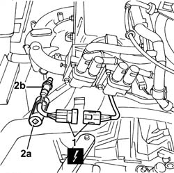
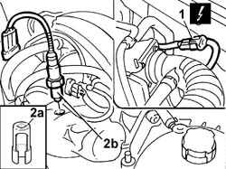
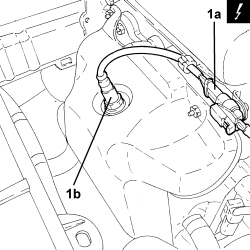

1080B94 front lambda probe with catalitic converter r r
- Path
- Procedures > 10 ENGINE > 1080 EMISSION CONTROL SYSTEM > 1080B exhaust emission control system > 1080B94 front lambda probe with catalitic converter r r
- Kind
- repair procedure (removal / refitting; the operation number is the code)
- Applies to
- engines: 1.2 8v, 1.4 8v, 1.6 16v; all production periods
- Interactive page
- https://sloeber94.github.io/elrnDB-fDbl/en/#/2584271
Applies to: engines: 1.2 8v; all production periods
 Removing
Removing
 Refitting
RefittingDisconnect the negative battery terminal.
1. Disconnect the electrical connection for the Lambda sensor.
Description | Connector | |
|---|---|---|
1 | Lambda sensor |
2. Use an appropriate wrench (2a) USAG 875 or similar specifications to unscrew lambda sensor (2b) and remove.

Applies to: engines: 1.2 8v; all production periods
Refitting
RemovingTighten the Lambda sensor to torque.
Fastening | Component | dia | Value (daNm) | |
|---|---|---|---|---|
- | Lambda sensor | CAT FRONT LAMBDA PROBE | M8 X 1.5 | 4.5 |
Connect the electrical connection for the Lambda sensor.
Description | Connector | |
|---|---|---|
- | Lambda sensor |
Connect the negative battery terminal.
Applies to: engines: 1.6 16v; all production periods
Removing
RefittingDisconnect the negative battery terminal.
Description | Connector | |
|---|---|---|
- | Battery |
1. Disconnect the electrical connection for the front Lambda sensor.
Description | Connector | |
|---|---|---|
1 | Lambda sensor on pre-catalyzer |
2. Use an appropriate wrench (2a) USAG 875 or similar to unscrew and remove front lambda sensor (2b) from the catalytic converter.

Applies to: engines: 1.6 16v; all production periods
Refitting
RemovingPosition the front Lambda sensor and tighten it to the catalytic converter to the recommended torque.
Fastening | Component | dia | Value (daNm) | |
|---|---|---|---|---|
- | - | REAR LAMBDA SENSOR TO CONVERTER | M18 x 1.5 | (Manifold side) 4.5 |
Restore the electrical connection for the Lambda sensor.
Description | Connector | |
|---|---|---|
- | Lambda sensor on pre-catalyzer |
Connect the negative battery terminal.
Description | Connector | |
|---|---|---|
- | Battery |
Applies to: engines: 1.4 8v; all production periods
Removing
Refitting- Disconnect the negative battery terminal.
1. Disconnect the electrical connection (1a), then unscrew and undo the Lambda sensor in front of catalytic converter (1b).
Description | Connector | |
|---|---|---|
1a | Lambda sensor on catalyzer |

Applies to: engines: 1.4 8v; all production periods
Refitting
Removing- Position the front Lambda sensor in its housing and tighten it to the recommended torque.
Component | Fastening | dia | Value (daNm) | Validity |
|---|---|---|---|---|
Lambda sensor | - | M18 | 4.1 ÷ 5.0 | 1.2 8v 1.4 8v 1.3 Multijet 90 CV |
- Connect the electrical connection for the front Lambda sensor to the catalytic converter.
- Connect the negative battery terminal.
Topics linked from this page (4)
- A001 BATTERY
- K15 LAMBDA SENSOR ON PRE-CATALYZER ( ENGINE )
- K017 LAMBDA SENSOR ON CATALYZER
- K040 LAMBDA SENSOR
Topics that link to this page (11)
- W01 HIGH CO EMISSIONS
- W02 CO EMISSIONS LOW, NOx EMISSIONS HIGH
- Z56 UPSTREAM LAMBDA SENSOR SIGNAL ERROR
- Z57 UPSTREAM LAMBDA SENSOR SIGNAL ERROR
- 1016C10 cylinder head - r + r and replace gasket
- 1036G20 camshaft controlling intake valves in top head - r + r with top head removed - includes replacement of top head if necessary
- 1072C10 exhaust manifold - r + r and replace seal
- 1080B62 catalytic converter - r + r
- 1080B98 LAMBDA SENSORS (all) - R.R.
- 1088C10 water pump - r + r
- 5530A10 alternator - r+r